Unified Forensic Evaluation & Research Presentation across Voice/Audio and Conversational Text Pipelines on the E-DAIC Benchmark
Benchmarking classical machine learning, transfer representations, and lightweight attention on clinical depression screening
BimodalPsycheAI conducts an empirical benchmark of objective depression detection on the Extended Distress Analysis Interview Corpus (E-DAIC / AVEC 2019). The benchmark rigorously evaluates two complementary communicative modalities:
all-MiniLM-L6-v2 384-d), chronological interview segmentation (early, middle, late, concatenated), frozen transformer chunk representations (distilbert-base-uncased 768-d), and lightweight trainable additive attention pooling.Executive research synthesis across modalities, model architectures, and pooling strategies
Across both depression classification (binary PHQ ≥ 10) and continuous severity tracking (PHQ score 0–24), conversational text representations consistently achieve higher concordance and lower prediction errors than acoustic descriptors:
Phase 18C and its independent forensic audit revealed an intriguing dichotomy for lightweight additive attention pooling over frozen DistilBERT chunk representations:
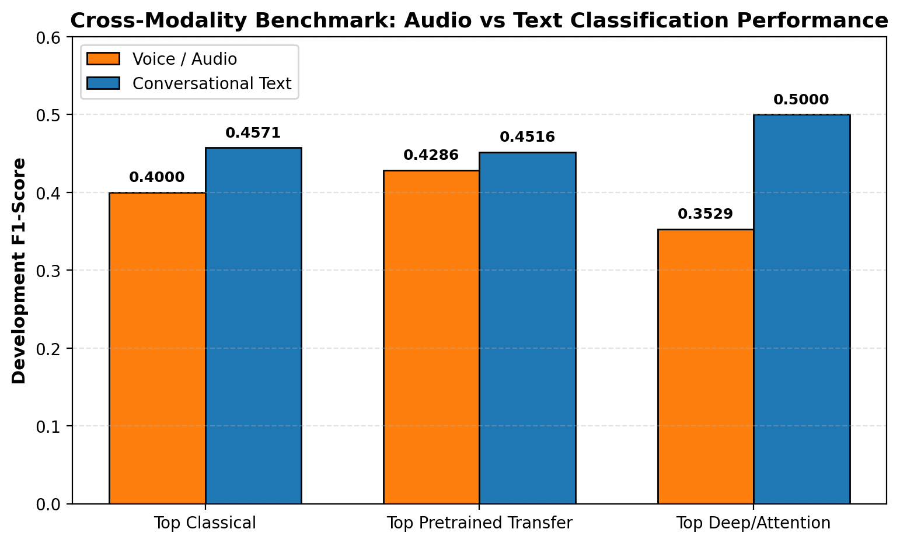
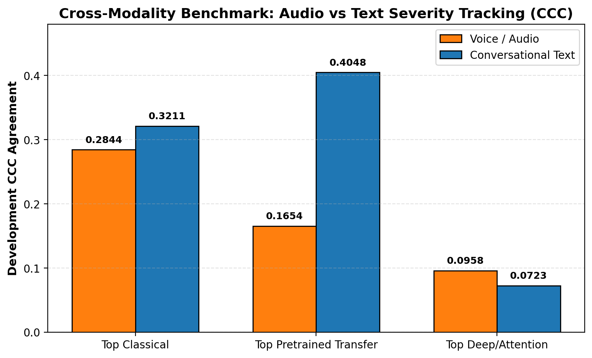
Detection of clinical depression risk: precision, recall, balanced accuracy, and ROC-AUC
Evaluated on the official Development split (n=56: 44 non-depressed, 12 depressed; 21.4% prevalence; or matched cohort n=54: 10 depressed).
| Modality | Model Architecture | Feature Representation | Cohort | Dev F1 | Bal. Acc | ROC-AUC | Precision | Recall | Status |
|---|---|---|---|---|---|---|---|---|---|
| Voice/Audio | LinearSVC | raw_mfcc (mean_std, 78-d) |
n=56 | 0.4000 | 0.6174 | 0.6761 | 0.3529 | 0.4615 | Verified |
| Voice/Audio | LinearSVC | raw_egemaps (mean_std, 46-d) |
n=56 | 0.2222 | 0.5379 | 0.5057 | 0.2000 | 0.2500 | Verified |
| Voice/Audio | LinearSVC | vgg16 (mean, 4096-d) |
n=56 | 0.4286 | 0.6364 | 0.6477 | 0.3750 | 0.5000 | Verified |
| Voice/Audio | MLP Classifier | vgg16 (mean_std, 8192-d) |
n=56 | 0.3529 | 0.5720 | 0.6629 | 0.2727 | 0.5000 | Verified |
| Voice/Audio | GRU(32)+Attention | vgg16 (temporal sequence, 4096-d) |
n=56 | 0.0000 | 0.4773 | 0.6648 | 0.0000 | 0.0000 | Verified |
| Text | LinearSVC (calibrated) | char_tfidf (sparse) |
n=56 | 0.4571 | 0.6629 | 0.7159 | 0.3810 | 0.5714 | Verified |
| Text | LinearSVC | all-MiniLM-L6-v2 (mean_std, 768-d) |
n=56 | 0.4000 | 0.6136 | 0.6534 | 0.3333 | 0.5000 | Verified |
| Text | LinearSVC | all-MiniLM-L6-v2 (middle segment mean, 384-d) |
n=56 | 0.5161 | 0.7083 | 0.6894 | 0.4706 | 0.5714 | Verified |
| Text | LinearSVC | distilbert-base-uncased (whole__median, 768-d) |
n=56 | 0.4516 | 0.6553 | 0.6591 | 0.3684 | 0.5833 | Verified (Audited) |
| Text | LinearSVC | distilbert-base-uncased (concat__mean, 2304-d) |
n=54 | 0.4615 | 0.6607 | 0.6210 | 0.3750 | 0.6000 | Verified (Audited) |
| Text | Additive Attention (Seed 42) | distilbert-base-uncased (whole_attention, 768-d) |
n=56 | 0.4348 | 0.6439 | 0.7121 | 0.4167 | 0.4545 | Verified (Audited) |
| Text | Additive Attention (3-Seed Mean) | distilbert-base-uncased (whole_attention, 768-d) |
n=56 | 0.4006 | 0.5922 | 0.7146 | 0.3681 | 0.4545 | Verified (Audited) |
| Text | Additive Attention (Seed 456) | distilbert-base-uncased (middle_attention, 768-d) |
n=56 | 0.5000 | 0.6818 | 0.6572 | 0.4375 | 0.5833 | Verified (Audited) |
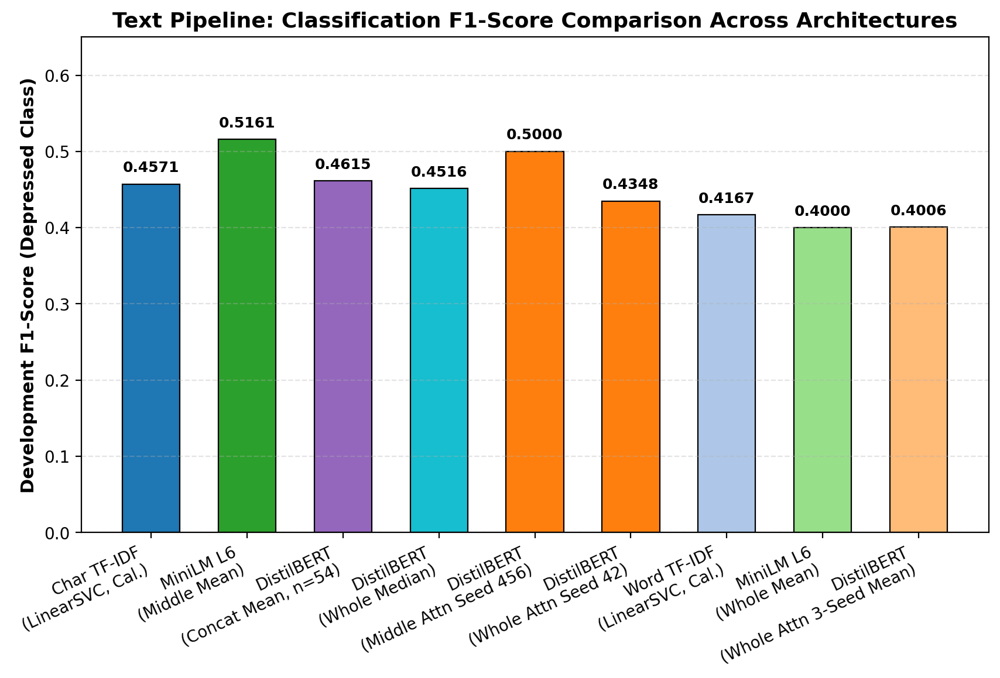
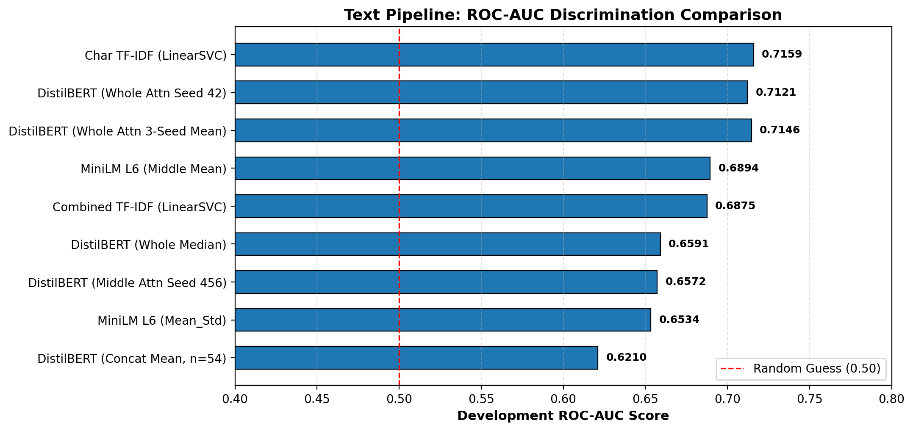
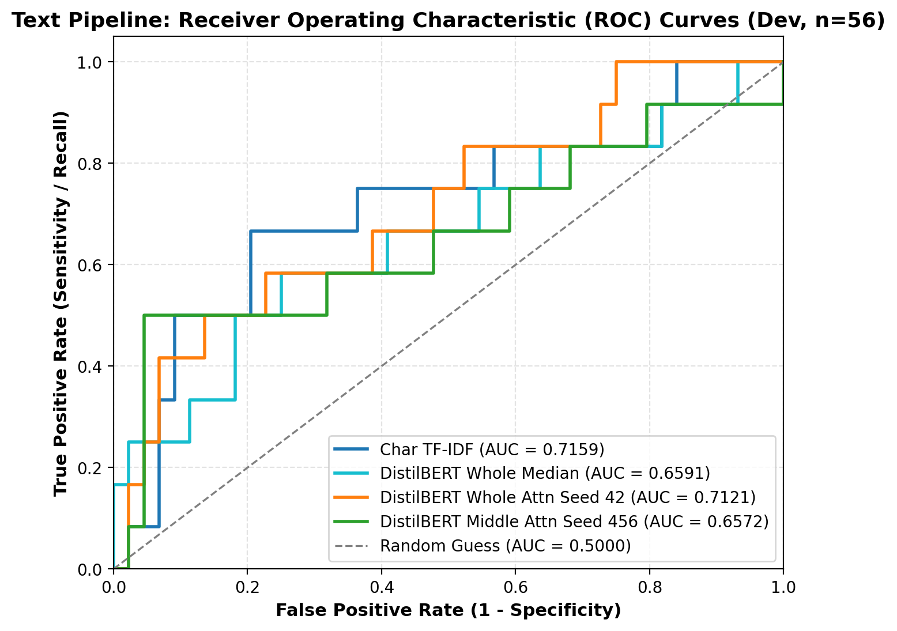
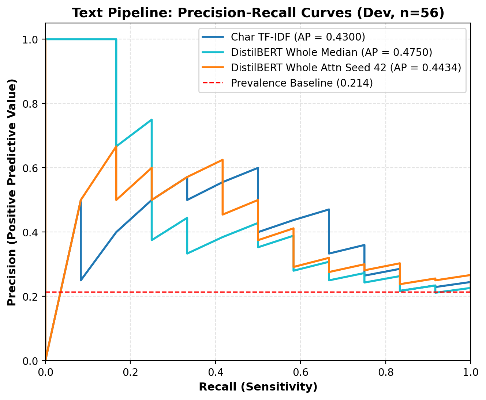
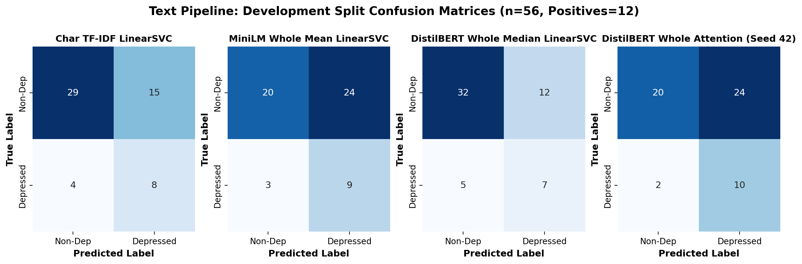
Tracking clinical severity with Lin's Concordance Correlation Coefficient, RMSE, and MAE
Evaluated against actual PHQ-8 clinical severity scores on the official Development split (n=56: Mean=6.14, Std=6.01, Range 0–22; or matched cohort n=54).
| Modality | Model Architecture | Feature Representation | Cohort | Dev CCC ↑ | Dev RMSE ↓ | Dev MAE ↓ | Dev R² | Pearson r | Status |
|---|---|---|---|---|---|---|---|---|---|
| Voice/Audio | Ridge | raw_mfcc (mean_std, 78-d) |
n=56 | 0.2844 | 6.2167 | 5.1740 | -0.2053 | 0.3134 | Verified |
| Voice/Audio | Ridge | raw_egemaps (mean_std, 46-d) |
n=56 | 0.0273 | 6.3981 | 5.2559 | -0.2768 | 0.2384 | Verified |
| Voice/Audio | XGBRegressor | boaw_mfcc (mean_std, 200-d) |
n=56 | 0.1613 | 5.7172 | 4.6654 | -0.0193 | 0.1820 | Verified |
| Voice/Audio | Ridge | densenet201 (mean, 1920-d) |
n=56 | 0.1496 | 7.4676 | 5.6237 | -0.7397 | 0.1819 | Verified |
| Voice/Audio | MLP Regressor | densenet201 (mean, 1920-d) |
n=56 | 0.1654 | 6.4523 | 4.9602 | -0.2987 | 0.2012 | Verified |
| Voice/Audio | GRU(32)+Attention | vgg16 (temporal sequence, 4096-d) |
n=56 | 0.0958 | 6.9533 | 5.7404 | -0.5079 | 0.1245 | Verified |
| Text | Ridge (tuned) | char_tfidf (sparse) |
n=56 | 0.3211 | 4.9812 | 3.9942 | 0.2262 | 0.5146 | Verified |
| Text | Ridge | all-MiniLM-L6-v2 (whole__mean, 384-d) |
n=56 | 0.3707 | 5.4370 | 4.3168 | 0.0781 | 0.4704 | Verified |
| Text | Ridge | all-MiniLM-L6-v2 (whole__median, 384-d) |
n=56 | 0.3958 | 5.7390 | 4.4512 | -0.0272 | 0.4412 | Verified |
| Text | Ridge | distilbert-base-uncased (whole__mean_std, 1536-d) |
n=56 | 0.4048 | 5.3423 | 4.4008 | 0.1102 | 0.4372 | Verified (Audited) |
| Text | Ridge | distilbert-base-uncased (middle__mean, 768-d) |
n=56 | 0.4022 | 5.1890 | 4.2374 | 0.1606 | 0.4346 | Verified (Audited) |
| Text | Ridge | distilbert-base-uncased (concat__mean, 2304-d) |
n=54 | 0.2817 | 5.0706 | 4.2280 | 0.2210 | 0.3150 | Verified (Audited) |
| Text | Additive Attention (Seed 42) | distilbert-base-uncased (whole_attention, 768-d) |
n=56 | 0.0723 | 5.5017 | 4.5404 | 0.0564 | 0.1412 | Verified (Audited) |
| Text | Additive Attention (3-Seed Mean) | distilbert-base-uncased (whole_attention, 768-d) |
n=56 | 0.0466 | 5.5686 | 4.6084 | 0.0333 | 0.1084 | Verified (Audited) |
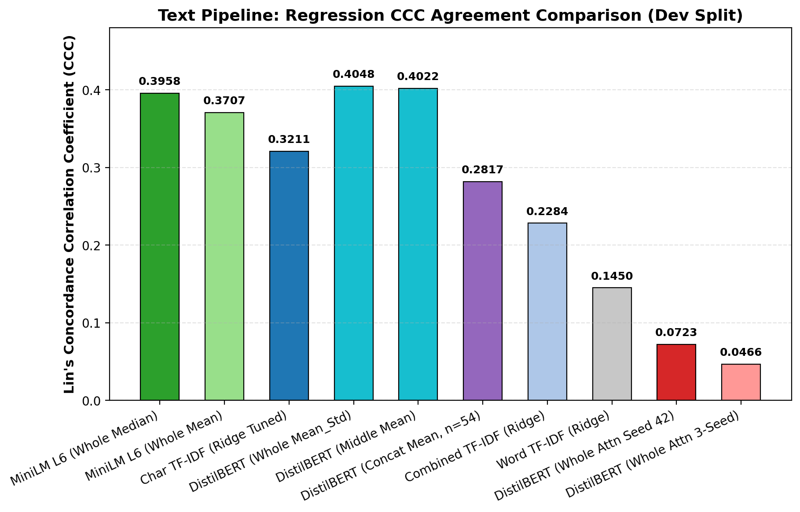
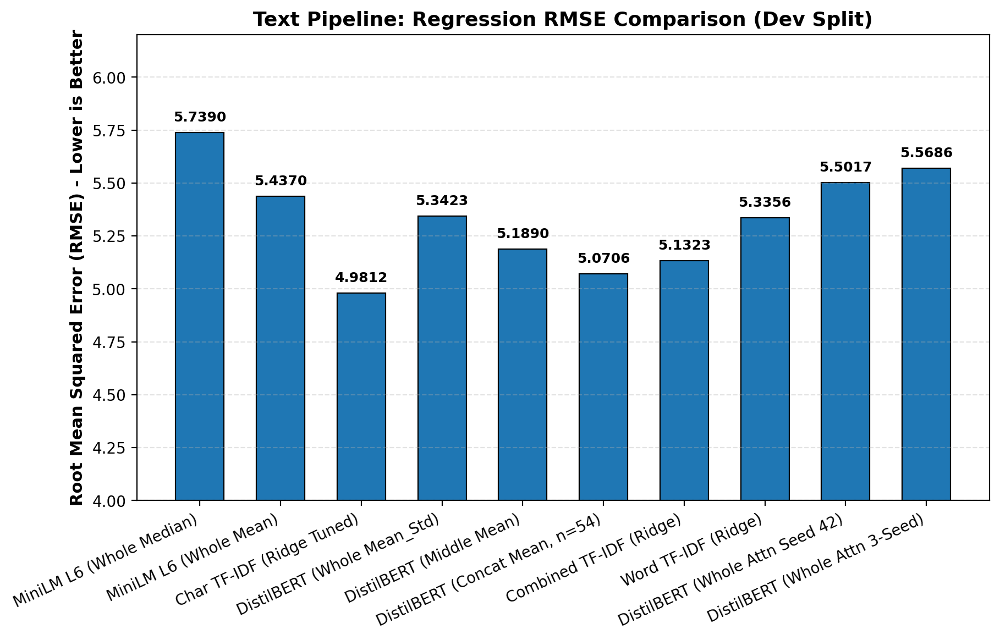
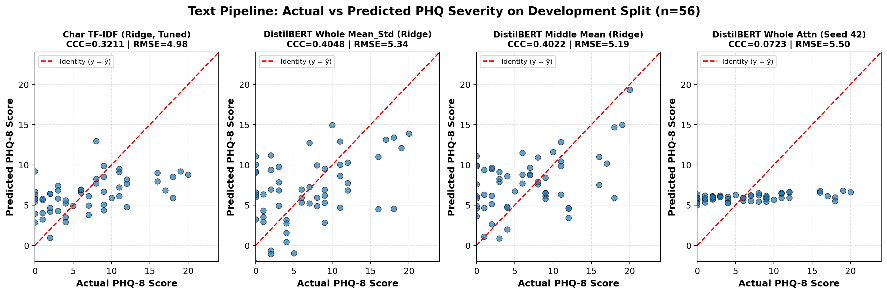
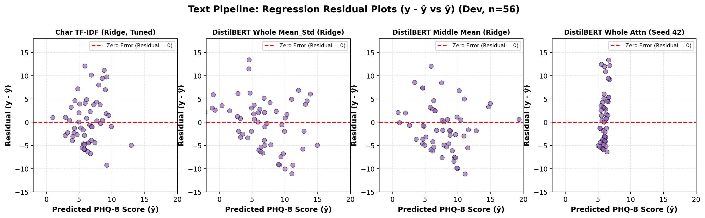
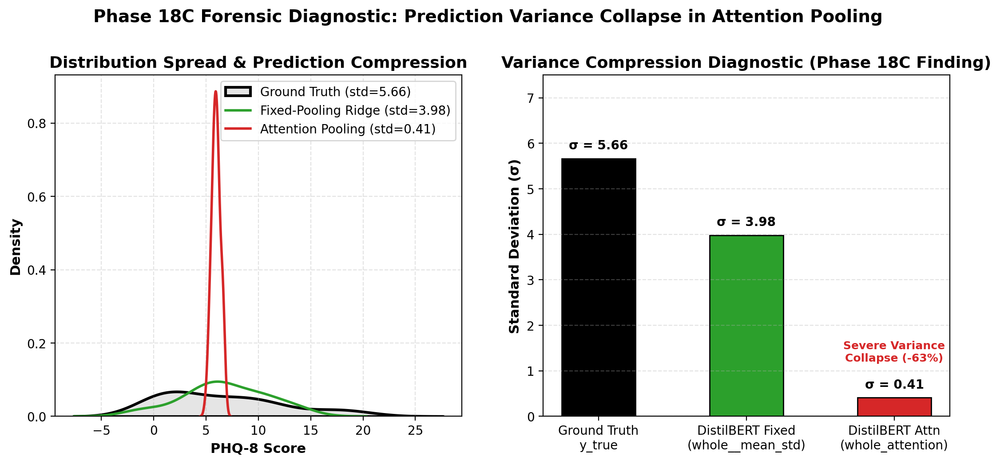
Analysis of acoustic Low-Level Descriptors, BoAW codebooks, deep CNN embeddings, and temporal sequence models
The audio benchmark evaluates whether acoustic vocal dynamics alone can reliably distinguish depression or track clinical severity on conversational speech:
mean_std (78-d) with LinearSVC achieves Dev F1=0.4000 and ROC-AUC=0.6761; Ridge regression achieves Dev CCC=0.2844. eGeMAPS descriptors exhibit substantially lower sensitivity (F1=0.2222, CCC=0.0273).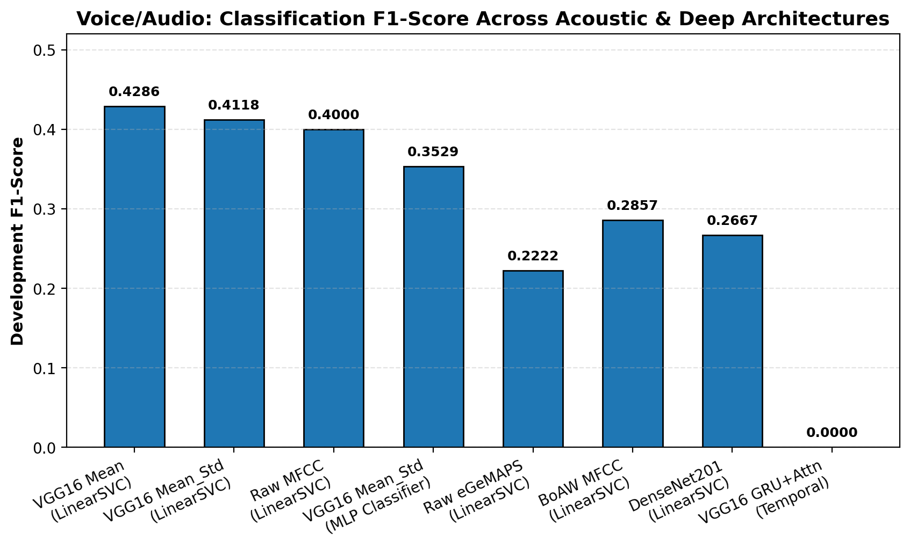
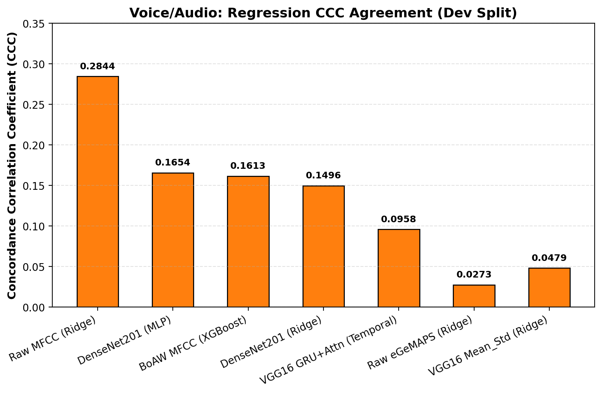
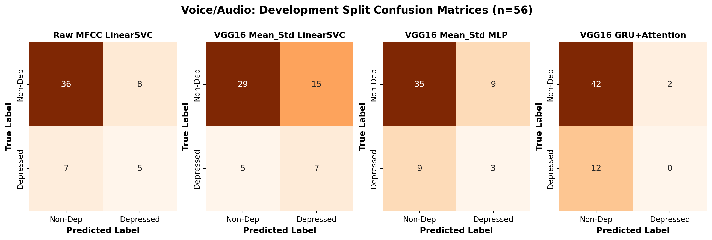
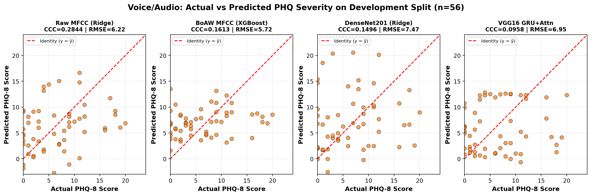
From sparse n-gram TF-IDF to transformer embeddings, chronological segmentation, and additive attention
Text experiments progressed across five formal phases (Phases 17A through 18C):
all-MiniLM-L6-v2 embeddings established dense semantic baselines (Dev F1=0.4000, CCC=0.3057), which were systematically audited and tuned.whole__mean_std achieved Dev CCC=0.4048 (RMSE=5.3423) and middle__mean achieved CCC=0.4022.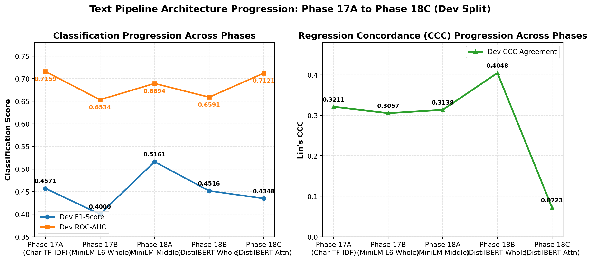
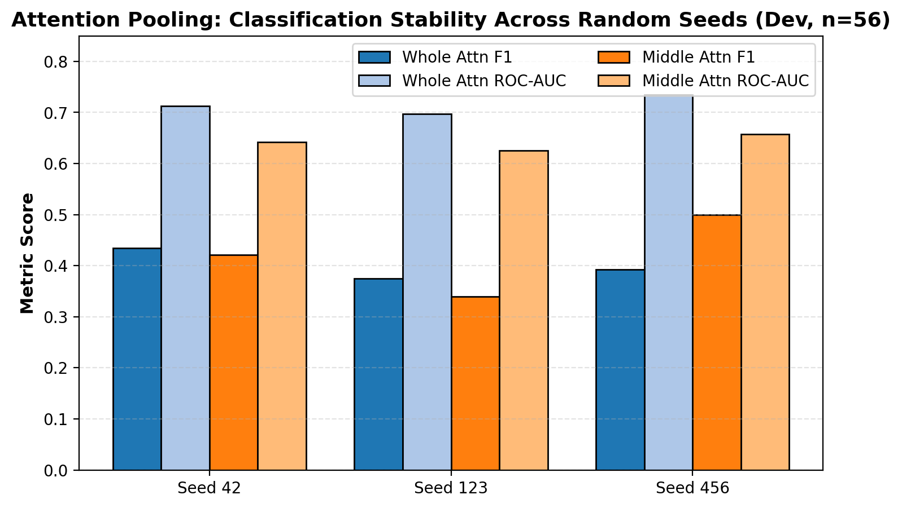
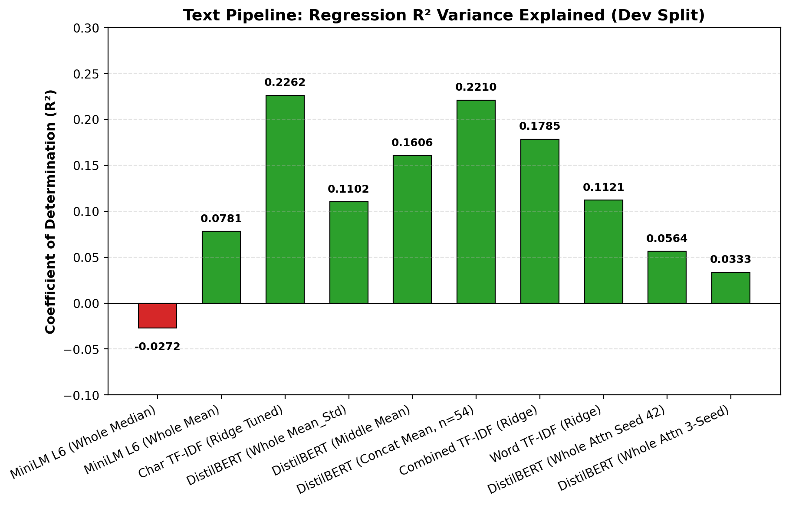
Participant-level isolation, cross-validation discipline, and clinical benchmark constraints
All chunk embeddings, acoustic frames, and feature tables are grouped strictly by participant identifier. Chunks or frames from the same individual never cross train and validation folds. Standard scalers and decision thresholds are fitted exclusively on training folds.
The official Test split (n=56 participants) remains 100% quarantined. Zero test labels or test predictions are displayed on this dashboard or used for model tuning. Test evaluation is reserved strictly for the designated final release phase.
3-segment concatenation requires all three interview phases (early, middle, late), resulting in a matched cohort of 54 Development participants (10 depressed). Whole-interview models evaluate all 56 participants (12 depressed). Cohort sizes are explicitly distinguished in all tables.
Pearson's r measures linear association but is invariant to shift and scale errors. Lin's Concordance Correlation Coefficient (CCC) penalizes both slope deviation and mean bias against the identity line (y = ŷ), making it the gold standard for clinical severity agreement.
Preserved benchmark candidates and self-contained reproduction scripts
Selected based on multi-metric balance, reproducibility, and rigorous forensic verification:
# 1. Generate all publication figures (25 high-resolution PNGs)
python ml-training/code/visualization/generate_phase20_visualizations.py
# 2. Inspect curated benchmark CSVs
cat ml-training/benchmarks/classification_benchmark.csv
cat ml-training/benchmarks/regression_benchmark.csv
cat ml-training/benchmarks/curated_model_comparison.csv
# 3. View audit reports
cat ml-training/outputs/visualization_audit/source_inventory.md
cat ml-training/outputs/visualization_audit/visualization_validation_report.md